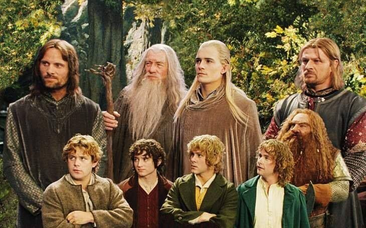

filmin özeti
|  |
Yönetmen Peter JacksonSenarist Peter Jackson, J.R.R. TolkienOyuncular: Elijah Wood, Sean Astin, Ian McKellenOrijinal adı The Lord of the Rings: The Fellowship of the RingYüzüklerin Efendisi: Yüzük Kardeşliği, dünyanın kaderini değişterecek olan yüzükten kurtulmak için verilen mücadeleyi konu ediyor. Yıllar önce üretilen ve Orta Dünya topraklarına kandan başka hiçbir şey getirmeyen yüzüklerin sonuncusu, üretiminden yüz yıllar sonra ortaya çıkar. Amcasının kendisine emanet ettiği yüzüğün nelere kadir olduğundan habersiz olan Frodo, büyücü Gandalf'ın anlattıkları sonrasında dehşete kapılır. Bu yüzükten ve müstakbel savaşlardan kurtulmanın tek yolu, gücünü toplamaya çalışan Sauron'u da engellemek için bu yüzüğü yok etmektir. Yüzüğü yok edilebileceği tek yer olan Mordor'a götürmek için kendini feda eden savaşçılardan oluşan bir ekip oluşturulur. Çok uzun ve çetin geçecek olan yolculuk başlar. Orta Dünya'nın kaderi, bu insanların ellerindedir. |